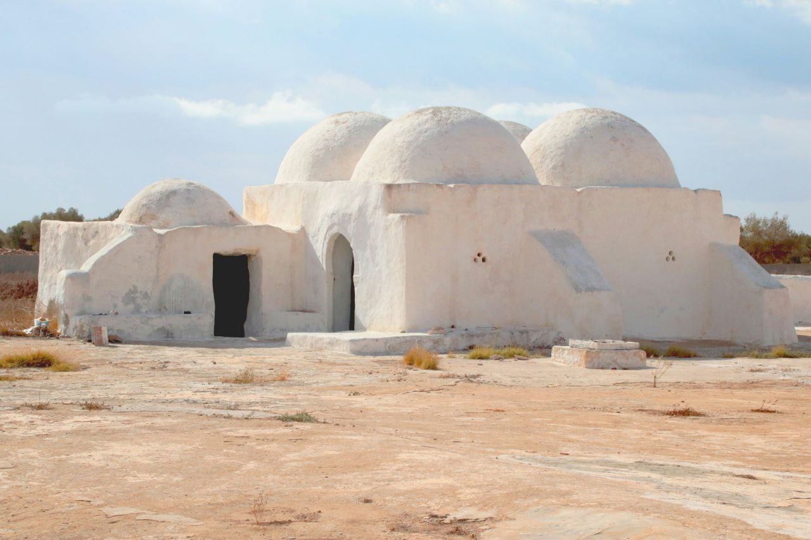

Tunisia, a vibrant gem of North Africa, is a land where history, culture, and natural beauty seamlessly blend to create an unforgettable destination. Located at the crossroads of the Mediterranean and the Sahara, Tunisia boasts a rich tapestry of ancient civilizations, stunning landscapes, and warm hospitality. From the legendary ruins of Carthage to the charming medinas of Tunis, every corner of Tunisia tells a story. Its golden beaches stretch along the Mediterranean coast, offering serene retreats, while the vast Sahara Desert provides an otherworldly adventure for the intrepid traveler.
Explore Tunisia's rich tradition of handicrafts, including pottery, weaving, and jewelry making.
Discover the rich flavors of Tunisian cuisine, a fusion of Mediterranean and North African influences.
Experience the vibrant festivals and the enchanting rhythms of traditional Tunisian music.
Tunisia attracts tourists with its rich history, stunning beaches, and unique culture. From ancient ruins like Carthage and El Djem to the vibrant medinas of Tunis, the country offers unforgettable experiences. The Mediterranean coastline, including Hammamet and Djerba, provides serene escapes, while the Sahara Desert promises adventure. Charming villages like Sidi Bou Said and landmarks like the Great Mosque of Kairouan add to its allure. Tunisia’s warm hospitality and diverse attractions make it a favorite destination for travelers worldwide.